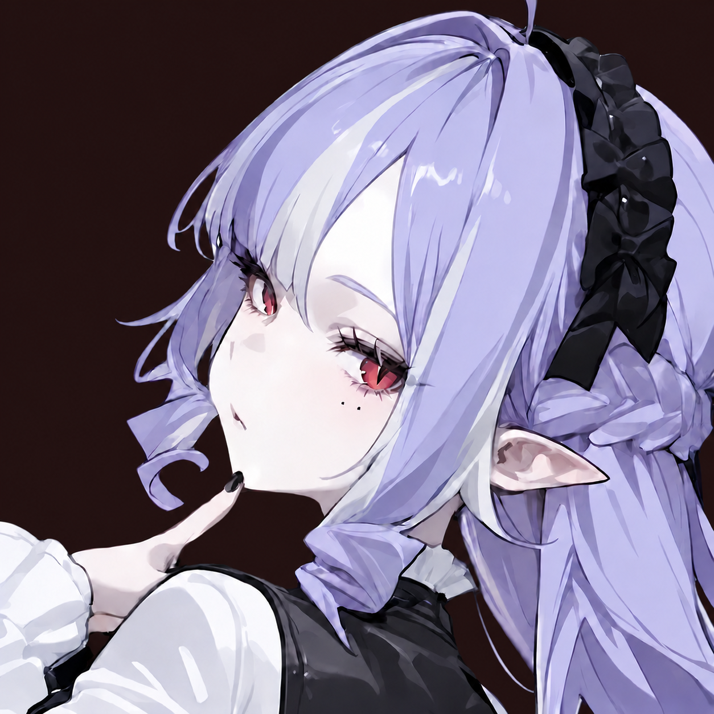

Мой уровень
—
VIVIAN / WEB 2.0
Только реальные данные. Ничего не подставляется вместо недоступной статистики.
Войди через Discord, чтобы посмотреть свой уровень и XP.
Войти через Discord ↗
—
Загрузка...
Стены, краши и личные записи пока не подключены к проверенному серверному хранилищу. Мы не показываем выдуманные данные и не переносим локальные демо-записи без согласия.
Демо-сценарии отделены от настоящего профиля. Следующий этап — безопасная синхронизация с базой Discord-бота.